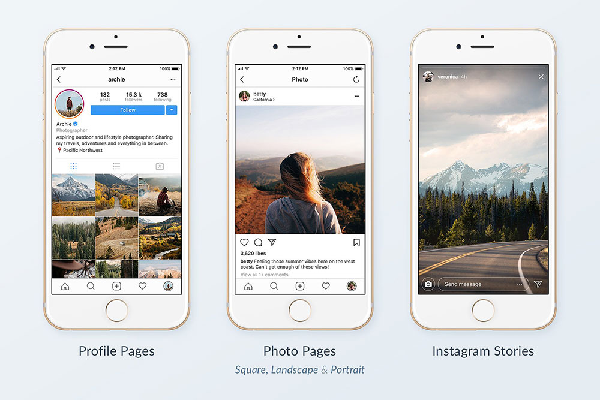

Par qui et quand ?
Instagram est apparue parmi les applications sociales en 2010 et depuis elle à beaucoup evoluée. Elle à été créée par un homme que la photographie a toujours passionné : Kevin Systrom en effet durant ses études il a été encouragé a utiliser un appareil photo (Holga) qui fait des photos ... carrées, d'où le format de base des images instagram. La célèbre application à été rachetée par Facebook en 2012.
Pourquoi et pour qui ?
C'est un réseau social aussi bien pour les particuliers voulant partager leurs photos, leurs dessins ou leur vie que pour des professionnels. En effet de nombreux artistes utilisent cette plateforme pour rendre plus visible leur art et se faire de la PUB. On peut par exemple y retrouver des tatoueurs y affichant leurs oeuvres ou encore des sculpteurs exposant leurs créations. C'est donc une plateforme utile car on peut rajouter une légende et des Hashtags aux photos partagées pour plus d'informations comme le lieu d'exercice, si c'est une pièce unique ou non, le prix et bien d'autres choses.
En quoi instagram se démarque des autres ?
L'application permet de retoucher vos images avec de nombreux filtres (23 dans la version ) et permet également de modifier la luminosité de vos photos, le contraste, la chaleur des couleurs, la saturation, d'estomper ou encore d'appliquer un flou sur une partie de votre image. Vous pouvez aussi y mettre des stories (qui se supprimeront 24 heures après la mise en ligne ou de mettre des stories a la une qui resteront toujours.
Et à quoi ça ressemble ?
Et bien à ça :

C'est clair, les images sont bien présentées et généralement d'exelente qualitée. Que vous soyez pro ou que vous désiriez juste partager les beaux moments de votre vie lancez vous, l'application n'attends que vous.